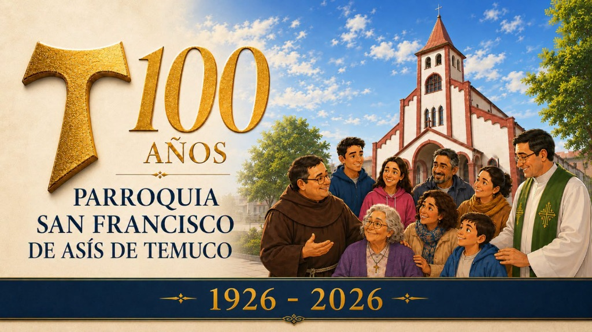

Jubileo Parroquial
100 Años del Templo
Celebrando un siglo de fe, encuentro y fraternidad franciscana (1926 - 2026).

Hemos comenzado las actividades de celebración por nuestro centenario. Iremos actualizando esta página con la información sobre fechas e iniciativas en torno a este importante evento. ¡Manténganse atentos!